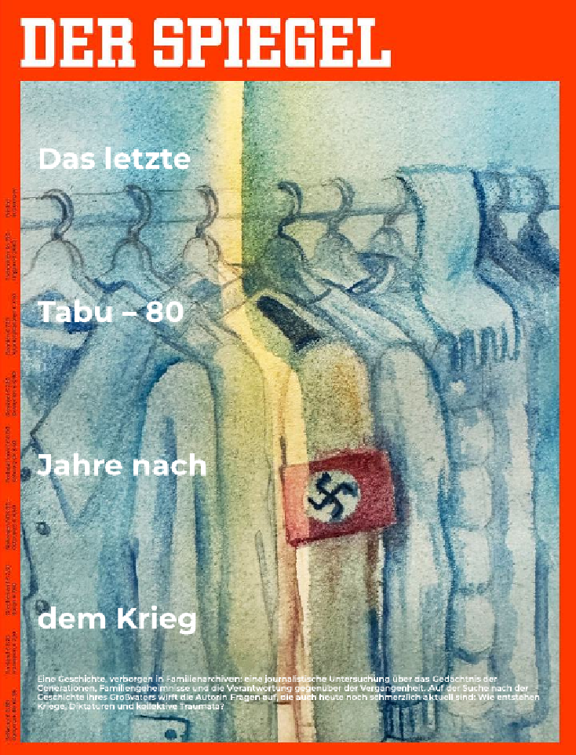
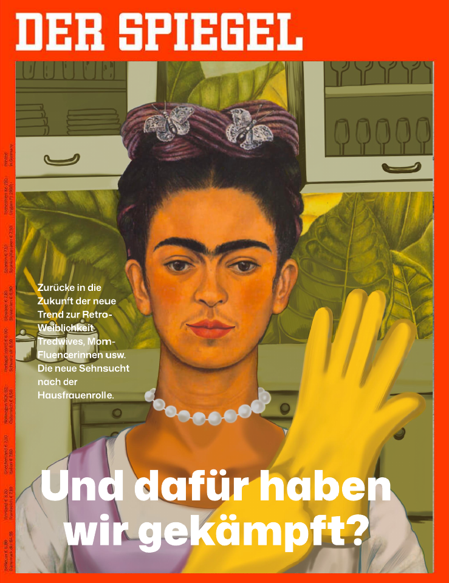

Der Spiegel
A series of editorial cover concepts for Der Spiegel, exploring contemporary social and cultural topics through illustration, typography and visual storytelling. The first cover explores the relationship between collective memory, family history and the difficulty of confronting Germany’s past. The illustration was painted by hand using watercolours and then adapted into the visual language of a newspaper cover. The second cover looks at the recent revival of the “housewife” ideal and the growing romanticisation of traditional gender roles in contemporary culture. The illustration and typography were developed to create a bold and immediately recognisable editorial image.

